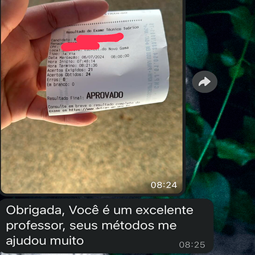

O Método que Aprova!
“Eu estava quase desistindo, mas com o Manual do Aprovado passei de primeira!” - João Silva
“Método incrível! Simples e eficiente.” - Maria Oliveira
Mais de 5.000 alunos aprovados , 30 provas oficiais incluídas, 100% de autenticidade com provas reais do Detran Goiás.

O Que Você Vai Receber Ao Comprar o Manual do Aprovado
- ✔ Dicas e técnicas exclusivas
- ✔ Correção de provas detalhada
- ✔ Plano de estudo personalizado
- ✔ Acesso a 30 provas oficiais do Detran Goiás
- ✔ E-book Foco Total: Garanta sua Aprovação
Bônus Exclusivo para Hoje!
Além do Manual do Aprovado, você receberá o E-book Foco Total, que vai te ajudar a focar nos estudos e ter mais chances de passar na prova teórica.
Sua Aprovação ou Seu Dinheiro de Volta!
Se após 30 dias de estudo com o Manual do Aprovado você não se sentir preparado para a prova teórica, devolvemos 100% do seu investimento.
Perguntas Frequentes
- Como acesso o conteúdo após a compra? Após a compra, você receberá um link de acesso no seu e-mail.
- Qual é a validade do material? O acesso ao material é vitalício.
- E se eu não passar na prova? Oferecemos uma garantia de 100% de reembolso.
Não Perca Mais Tempo
Comece Agora Sua Jornada para a Aprovação!
pague menos do que duas pizzas no mês e garanta sua aprovação